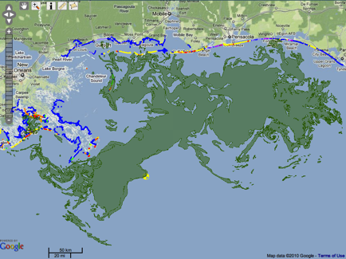

Source: Deepwater Horizon Unified Command website. To move the Timeline: use the mouse scroll wheel, the arrow keys or grab and drag the Timeline. Created using Simile Timeline.
|

Snapshot of shoreline cleanup and marine pollution as of 26 Jun 2010 from GeoPlatform.gov/gulfresponse |
|
|
Source: Deepwater Horizon Unified Command website. To move the Timeline: use the mouse scroll wheel, the arrow keys or grab and drag the Timeline. Created using Simile Timeline. |
|